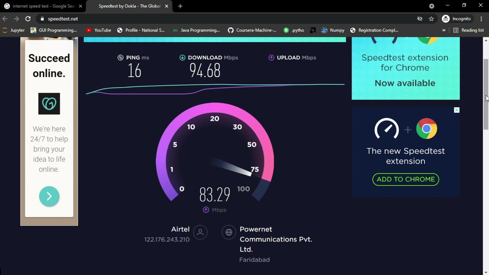
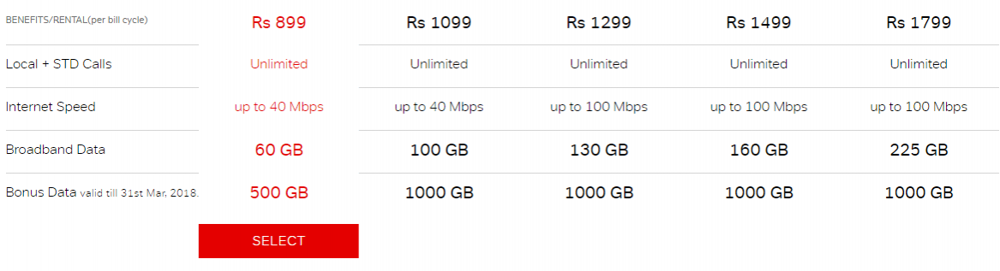

Buy New Wifi Connection for Home – My Fiber
The fastest Airtel Fiber WiFi plans are right here for you to subscribe to. Providing ultra-speed internet, Airtel WiFi is here to enhance your internet experience. With Airtel Xstream Fiber wifi connection you are bound to enjoy HD (High Definition) picture quality, fast downloads and uploads, minimal latency, and access to a variety of other services. Buy your new broadband connection today and get installation and WiFi router free of charge. We also have 24*7 customer support for you.
feature-1: No more need to pay for all subscription,one plan many benefits.

feature-2: We are not just claiming, We are really Giving you the best.

feature-3: Our packs are best In the line.
Read More
Get New Airtel Fiber Wifi Connection Nearby for your Home
Getting a new wifi connection poses its fair share of challenges as it requires a lot of pre-research on one’s part. You need to look out for good internet speed with uninterrupted connectivity and various requirements that would enrich your internet for home experience.
Well, Airtel Xstream Fiber services got you covered as Airtel Wifi is the solution to all your internet problems and phone issues. We bring you the best WiFi Fiber connection for home with office-like connectivity. Get a secure wi-fi connection and enjoy fast internet like never before. Take your wireless networking experience to a whole new level.
Sit in the comfort of your house and enjoy the convenience of our WiFi connection for home. Choose from a variety of our unlimited WiFi plans for home and set up a reliable and speedy connection with an amazing range of networks. With Airtel Fiber WiFi plans for home, enjoy good mobility and churn out productive hours for you or your business, while sitting in any corner of your house.
Airtel unlimited WiFi plans for home are quite popular amongst internet users for providing high-speed connectivity along with several other benefits like giving access to OTT (Over-The-Top) platforms, unlimited calling, and much more. You can conduct an internet speed test online to see how fast your Airtel Xstream Fiber connection is!
Check Out Airtel Fiber Wifi Plans & Benefits
Airtel Xstream Fiber plans offer you lightning speed along with many other benefits. All the Airtel Fiber Xstream wifi plans include unlimited local and STD calls, unlimited internet, and access to various apps such as Xstream Premium, Apollo, and Wynk Music. The most popular plans with the best WiFi Fiber price include:
The Basic Plan which is priced at Rs 499 per month and comes with an internet speed of up to 40 Mbps and Airtel Thanks benefits. The Entertainment plan can be availed at Rs 999 per month, and it provides you with an internet speed of up to 200 Mbps and access to OTT apps such as Disney + Hotstar and Amazon Prime.
Then, we have the Professional plan, priced at Rs 1498 per month which provides you with an internet speed of up to 300 Mbps and access to Netflix Basic, Disney + Hotstar, and Amazon Prime. And, if you wish to enjoy speed of up to 1 Gbps and access to Netflix Premium, Disney + Hotstar, and Amazon Prime, then you can take the Infinity Plan which is priced at Rs 3999 per month.
Explore Best Wifi Offers with OTT Subscription and much more
Worried about Wifi box price or wifi connection price? Fret not! We at Airtel, provide our customers with WiFi routers that are free of cost with unlimited WiFi plans. Whether it is the basic plan of Rs 499 or the Infinity plan of Rs 3999, the Airtel Fiber WiFi router price is zero. You also need not pay any installation charges to avail your WiFi connection for home.
Just pay for the plan and get high-speed internet, interrupted services, access to OTT platforms & other apps, Airtel Xstream Fiber customer support, and strong connectivity even during bad weather conditions. So, without any delay, subscribe to our service now and get amazing WiFi offers. Stream your cricket match or favorite movie without network issues.
Get Free Wifi Router with your Airtel Xstream Fiber Connection
With our Airtel fiber wi-fi plans, you don’t need to pay any installation charges. Our broadband customer support executive will visit your home and install the WiFi router and provide you a complete connection to Airtel broadband service with the WiFi router plans you subscribed to, without any additional cost.
Connect your home to high-speed internet and enjoy your favorite TV shows, movies, games, streaming platforms, social media, and more. Airtel router plans start from Rs 499 and go up to Rs 3999. These Airtel Xstream Fiber WiFi router recharge plans would keep your home devices (phone, tablet, laptop, PC, and more) connected to the internet with a speed as high as 1 Gbps.
Enjoy the Best WiFi Services Near you - Airtel Xstream Fiber
If you have been experiencing bad signals on your internet and home WiFi connection lately, then it’s time to switch to the best option where you don’t have to face latency in double digits. With Airtel, it’s time to bring home the best WiFi services. Subscribe to Airtel Xstream Fiber plans and avail yourself of the supreme WiFi service provider near you.
Airtel Fiber has been recognized as the best WiFi internet service provider in India. With our fast and secure plans, get good network coverage with indoor as well as outdoor connectivity, great performance on the World Wide Web, amazing roaming services, and almost no downtime.
Read Less